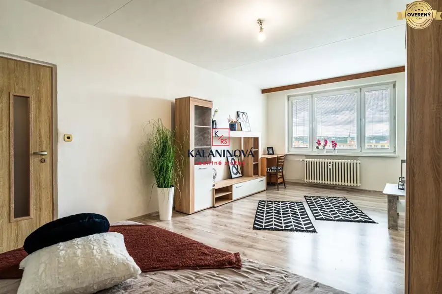
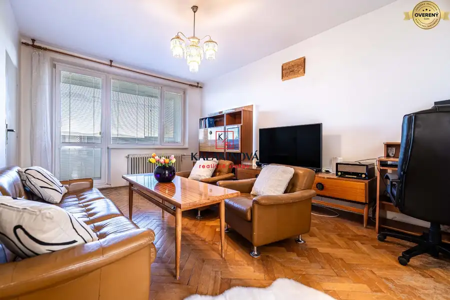
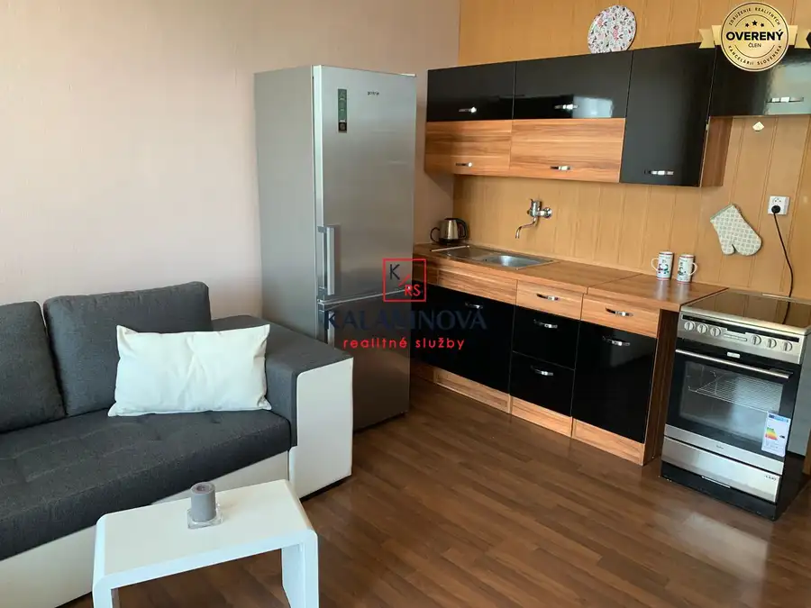

Investičný pozemok na výstavbu rekreačných chát - Betliar
Betliar
- Plocha13417 m²
- Vlastníctvofiremné
O nehnuteľnosti
Mária Hegedüšová z RK KALANINOVÁ realitné služby Vám exkluzívne ponúka na predaj rozsiahly investičný stavebný pozemok s výmerou 13 417 m² v čarovnom prírodnom prostredí lokality Nižná Maša pri Betliari, okres Rožňava.
Ak hľadáte miesto pre menší developerský projekt, rekreačný areál alebo výstavbu samostatných rekreačných nehnuteľností s možnosťou celoročného využitia, táto ponuka predstavuje zaujímavú investičnú príležitosť.
Predmetom predaja je parcela registra „C“ č. 2074, druh pozemku ostatná plocha, katastrálne územie Betliar.
Pozemok sa nachádza na rovinatom teréne v údolí rieky Slaná, obklopený prírodou a zároveň s veľmi dobrou dostupnosťou do Rožňavy. Z Košíc je lokalita dostupná približne za hodinu, zo Spišskej Novej Vsi za necelú hodinu a z Rožňavy približne za 7 minút.
? Pozrite si video a atmosféru lokality:
https://www.youtube.com/watch?v=u5SdY70ag1E
INVESTIČNÝ POTENCIÁL
Podľa dostupnej územnoplánovacej informácie je územie určené na výstavbu rekreačných nehnuteľností, pričom uvádzaná zastavanosť je do 30 %.
Predávajúci pôvodne pripravoval koncept uzatvoreného rekreačného areálu. Pre pozemok bol vypracovaný geometrický plán s rozdelením na 13 samostatných parciel, prevažne s výmerami približne 800 – 1 000 m².
Keďže geometrický plán zatiaľ nebol zapísaný do katastra nehnuteľností, nový vlastník má stále priestor prehodnotiť spôsob rozdelenia územia a prispôsobiť ho vlastnému developerskému zámeru.
Práve táto flexibilita môže byť pre investora významnou výhodou – pozemok je možné koncepčne riešiť ako menší uzatvorený rekreačný rezort, súbor samostatných chát alebo rozdeliť na väčší počet stavebných parciel.
INŽINIERSKE SIETE A TECHNICKÉ MOŽNOSTI
V bezprostrednej blízkosti sa nachádzajú elektrické siete a trafostanica vybudovaná v roku 2023. Zásobovanie vodou je možné riešiť vlastnou studňou, odpad individuálnym riešením podľa budúceho projektu.
Celý areál je v súčasnosti uzatvorený a prístupný cez uzamykateľnú bránu.
PREČO PRÁVE TÁTO LOKALITA?
Nižná Maša patrí do katastra známej obce Betliar, vyhľadávanej pre historické a prírodné prostredie. Blízkosť kaštieľa Betliar, Rožňavy, Slovenského krasu a Slovenského rudohoria vytvára predpoklady pre rekreačné a turistické využitie územia.
Okolie ponúka turistické a cyklistické trasy, pokojné prírodné prostredie a dobrú dostupnosť služieb v Betliari a Rožňave.
HLAVNÉ BENEFITY INVESTÍCIE
pozemok 13 417 m² v jednom celku,
možnosť výstavby rekreačných nehnuteľností,
územnoplánovacia informácia k dispozícii,
zastavanosť podľa podkladov do 30 %,
vypracovaný geometrický plán na 13 parciel,
možnosť zmeny budúceho rozdelenia pozemku,
rovinatý terén,
uzatvorený areál,
elektrické siete a nová trafostanica v blízkosti,
atraktívna prírodná lokalita pri Betliari,
vhodné pre developerský alebo investičný projekt,
firemné vlastníctvo – možnosť odpočtu DPH za splnenia zákonných podmienok.
POZEMOK S VIACERÝMI MOŽNOSŤAMI VYUŽITIA
Výhodou tejto nehnuteľnosti je, že investor nie je odkázaný iba na jeden podnikateľský zámer. Okrem rekreačnej výstavby je pre predmetnú lokalitu pripravený aj samostatný investičný koncept v oblasti akvakultúry – chovu jeseterov a produkcie slovenského kaviáru, ku ktorému je možné poskytnúť bližšie informácie vážnemu záujemcovi.
Cena a podrobné podklady k projektu na vyžiadanie.
V cene nehnuteľnosti je zahrnutý kompletný právny servis, overenie podpisov a náklady spojené so štandardným prevodom vlastníctva.
Pre bližšie informácie alebo dohodnutie osobnej obhliadky ma neváhajte kontaktovať.
Pri rýchlom jednaní DOHODA na cene možná.
Parametre
| Rozloha pozemku | 13417 m² |
|---|---|
| Vlastníctvo | firemné |
| Voda | studňa |
| El. napätie | 230/400V |
| Plyn | nie |
| Kanalizácia | ČOV |
| Inžinierske siete | blízko |
| Terén | rovina |
| Pripravené na výstavbu | schválené v územnom pláne |
| Dátum zverejnenia | 29. 10. 2025 |
Kde to je
Mohlo by Vás zaujímať

BytPredané10 PredanéKošice-Staré Mesto, veľký 1-izbový byt 49 m2, Novomeského mestská časť Staré Mesto, Košice 1-izbový49 m²8. podlažie Mária Hegedüšová z RK KALANINOVÁ realitné služby Vám EXKLUZÍVNE ponúka na predaj výnimočný 1-izbový byt so samostatnou kuchyňou v jednej z…
BytPredané10 Predané3-izbový byt s krásnym výhľadom - Prešov, Volgogradská Prešov 3-izbový67.39 m²7. podlažie PREDANÉ: Mária Hegedüšová z RK KALANINOVÁ realitné služby Vám EXKLUZÍVNE ponúka na predaj priestranný 3-izbový byt s veľkým potenciálom, v jednej z…
BytPredané8 PredanéEXKLUZÍVNE - garsónka, loggia, Postupimská, Košice - Furča mestská časť Dargovských hrdinov, Košice 1-izbový23 m²4. podlažie PREDANÉ: Mária Hegedüšová a realitná kancelária KALANINOVÁ – realitné služby Vám exkluzívne ponúka na predaj väčšiu garsónku s loggiou v dobrej…